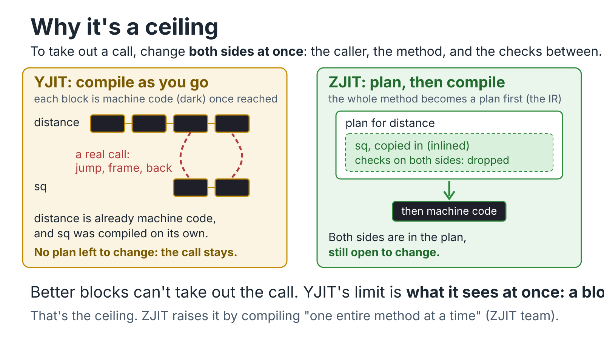
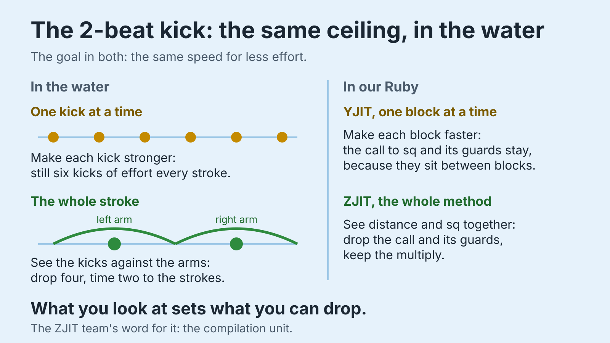
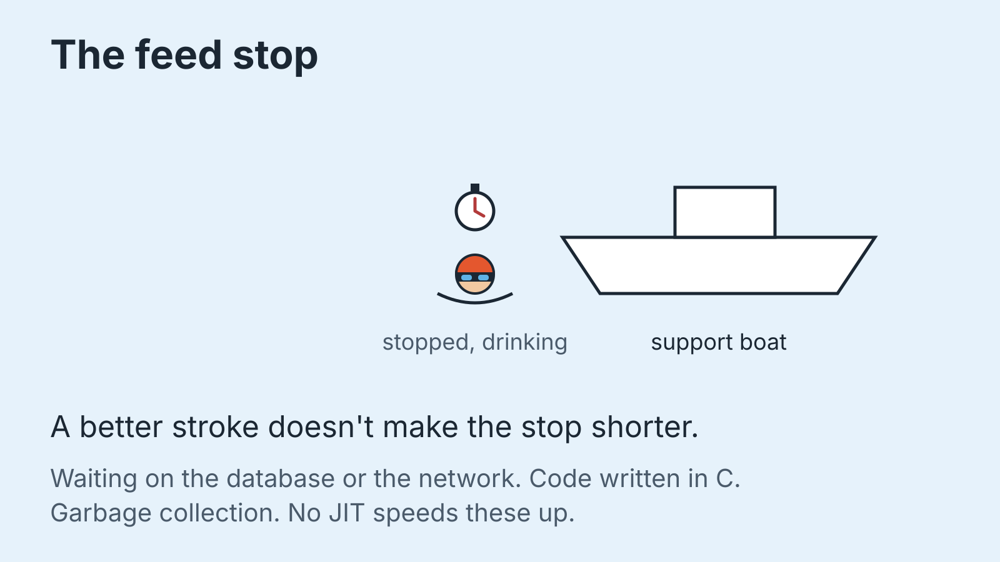

The Ceiling: Why Ruby 4.0 Needed a Second Compiler
Dhruva Sagar · RubyConf 2026
Ruby 4.0 ships two JIT compilers. Why build the second one?
Every time you lift your head
"Every time you lift your head, you slow down."
Ruby 4.0 ships two just-in-time compilers. Why build the second one?
Ruby swims with its head up

Our five lines
class Point
attr_reader :x, :y
def initialize(x, y) = (@x, @y = x, y)
end
def distance(a, b)
dx = a.x - b.x
dy = a.y - b.y
Math.sqrt(dx * dx + dy * dy)
end
The bytecode
ruby -r ./distance -e 'puts RubyVM::InstructionSequence.of(method(:distance)).disasm'
0000 getlocal_WC_0 a@0 0002 opt_send_without_block <calldata!mid:x, argc:0, ARGS_SIMPLE> 0004 getlocal_WC_0 b@1 0006 opt_send_without_block <calldata!mid:x, argc:0, ARGS_SIMPLE> 0008 opt_minus <calldata!mid:-, argc:1, ARGS_SIMPLE> 0010 setlocal_WC_0 dx@2 ... 0040 opt_send_without_block <calldata!mid:sqrt, argc:1, ARGS_SIMPLE> 0042 leave
Ruby 4.1.0-preview1
Learning to sight

YJIT: compile as you go
- Once a method is warm, compile a small piece, run it
- Look at the values that really turned up
- Compile the next piece for exactly those
# Insn: 0002 opt_send_without_block (stack_size: 1) # call to Point#x # guard not immediate # guard known class # guard shape # Block: distance@distance.rb:7 # Insn: 0004 getlocal_WC_0 (stack_size: 1) # defer_compilation
Ruby 4.1.0-preview1 · ruby --yjit --yjit-dump-disasm
ZJIT: watch, then plan
- While the interpreter runs the method, record which types turn up: a profile
- Then turn the whole method into a plan: the IR
- Improve the plan, then compile it, once
ZJIT: the IR on one slide
fn distance@distance.rb:7: bb3(v15:BasicObject, v16:BasicObject, v17:BasicObject): v79:ObjectSubclass[class_exact:Point] = GuardType v16 v82:CShape[0x10007a] = GuardBitEquals v81, CShape(0x10007a) recompile v83:BasicObject = LoadField v79, :@x ... v93:Fixnum = GuardType v83, Fixnum recompile v94:Fixnum = GuardType v90, Fixnum v95:Fixnum = FixnumSub v93, v94 ... v118:Fixnum = FixnumMult v95, v95 ... v130:BasicObject = CCallWithFrame v54, :Math.sqrt, v126 Return v130
The whole method as one plan. GuardType and GuardBitEquals are sights. v95 is dx.
Ruby 4.1.0-preview1 · ruby --zjit --zjit-dump-hir
25 compiles, or one
YJIT ZJIT call 30 call 30 distance@distance_log.rb:7 (index: 0) distance@distance_log.rb:7 distance@distance_log.rb:7 (index: 2) ... distance@distance_log.rb:10 (index: 42)
Default settings. Both start at call 30. YJIT: 25 pieces. ZJIT: 1 plan.
On five lines, a tie
YJIT ZJIT # Insn: 0028 getlocal_WC_0 (stack_size: 2) v95:Fixnum = FixnumSub v93, v94 # Insn: 0030 opt_mult (stack_size: 3) ... # Insn: 0032 getlocal_WC_0 (stack_size: 2) v118:Fixnum = FixnumMult v95, v95
At dx * dx neither checks again: both already know dx is a number.
Ruby 4.1.0-preview1 · default settings
The plateau

One more call
def sq(n) = n * n
def distance(a, b)
dx = a.x - b.x
dy = a.y - b.y
Math.sqrt(sq(dx) + sq(dy))
end
One more call is one more buoy

At the turn buoy
YJIT ZJIT # call to Object#sq v95:Fixnum = FixnumSub v93, v94 # push callee control frame ... # gen_direct_jmp: existing block PushInlineFrame :sq, v116, num_args=1 ... v169:Fixnum = FixnumMult v95, v95 # Block: sq@distance_sq.rb:6 PopInlineFrame # Insn: 0004 opt_mult (stack_size: 2) # guard arg0 fixnum # guard arg1 fixnum # pop stack frame
YJIT: a real call into a general sq. ZJIT: the call disappears; sq becomes one multiply of v95, which is dx.
Ruby 4.1.0-preview1 · default settings
Why it's a ceiling

The 2-beat kick

In the ZJIT team's words
"we want to both raise the performance ceiling (bigger compilation unit size and SSA IR) and encourage more outside contribution (by becoming a more traditional method compiler)." — Max Bernstein, ZJIT team, Rails at Scale, 2025-12-24
Race day: params
def [](key) super(convert_key(key)) end def convert_key(key) Symbol === key ? key.name : key end
HashWithIndifferentAccess: what Rails params is built on.
activesupport 8.1.4.1
params, through both
YJIT at []:
# call to ActiveSupport::HashWithIndifferentAccess#convert_key # push callee control frame # gen_direct_jmp: existing block
ZJIT at []:
PushInlineFrame :convert_key, v27, num_args=1 v78:BoolExact = IsA v10, v43 CondBranch v50, bb8(), bb7() ... PopInlineFrame v35:BasicObject = CCallWithFrame v27, :Hash#[], v71
Ruby 4.1.0-preview1 · default settings
The feed stop

Calm water, choppy water
def double(x) = x + x # called with Integers only, or with five types
Calm, ZJIT: spliced in, one check, one add.
v44:Fixnum = GuardType v10, Fixnum recompile v46:Fixnum = FixnumAdd v44, v44
Choppy: five types.
YJIT ZJIT # guard arg0 fixnum CondBranchHasType v10, Fixnum, bb12(), bb13() # call to Float#+ v79:BasicObject = CCallWithFrame v47, :Integer#+, v10 # call to String#+ ... # call to Array#+ Send v10, :+, v10 # SendFallbackReason: Send: polymorphic fallback
Ruby 4.1.0-preview1 · default settings
Read your own code
ruby -r ./your_file -e 'puts RubyVM::InstructionSequence.of(method(:m)).disasm'
ruby --zjit --zjit-dump-hir your_file.rb
ruby --zjit --zjit-stats your_file.rb
Look for:
- A call that didn't disappear: a turn you could make easier
- Checks you didn't expect: a value that isn't one type
- Calls into C: time no Ruby compiler can touch
What it means for Ruby
YJIT compiles Ruby a bit at a time, deciding as it goes; ZJIT plans a whole method at once, so it can see through small method calls and stop paying for them. That's the room Ruby needed to keep getting faster.
Head down
"Every time you lift your head, you slow down."
Next time someone says "Ruby is slow", ask: which part?
Slides, code, every capture, the full write-up: [REPO-URL]